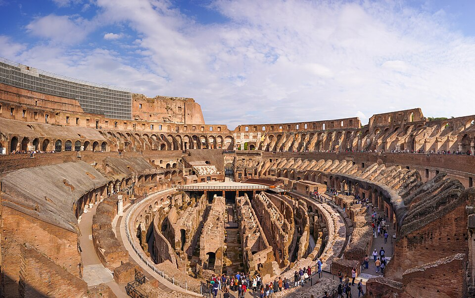
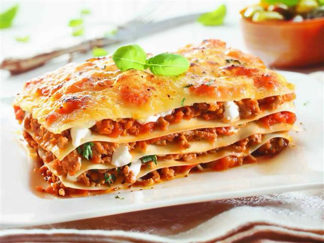
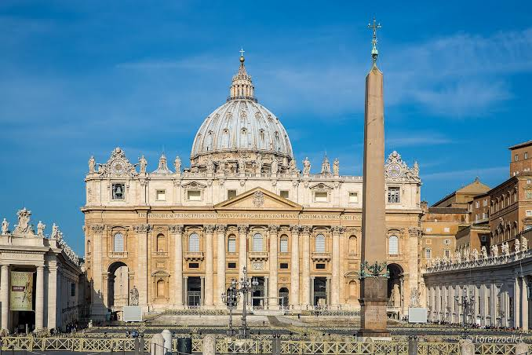

Визначні пам'ятки
Колізей, Римський форум і Пантеон дають змогу побачити, як розвивалося одне з найвпливовіших міст античності.

Кухня та гастрономія
Паста, піца й джелато смакують особливо добре в невеликих сімейних закладах старого міста.

Культура та традиції
Мистецтво Ватикану, базиліки та міські площі розповідають про багатовікову культуру Рима.

Особисті історії
Незабутнім стало бажання біля фонтану Треві й повільна прогулянка освітленими вулицями після заходу сонця.